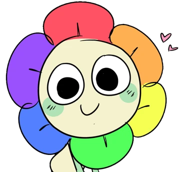
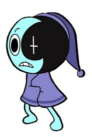
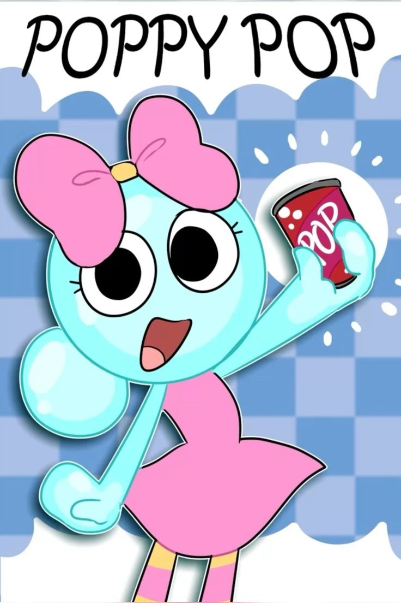
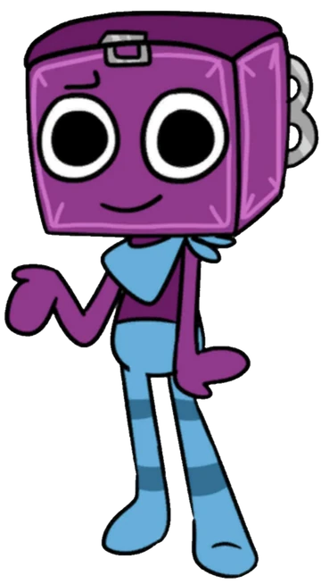
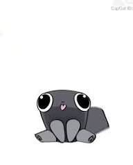
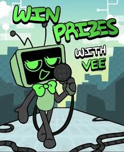
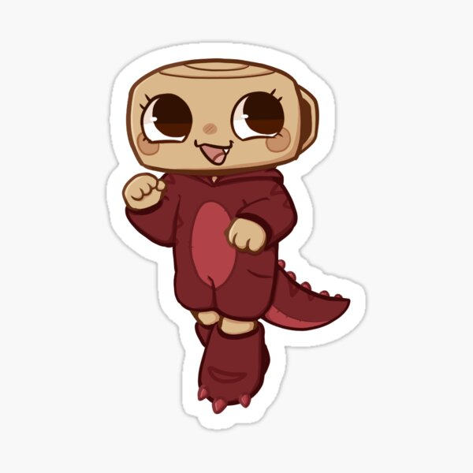
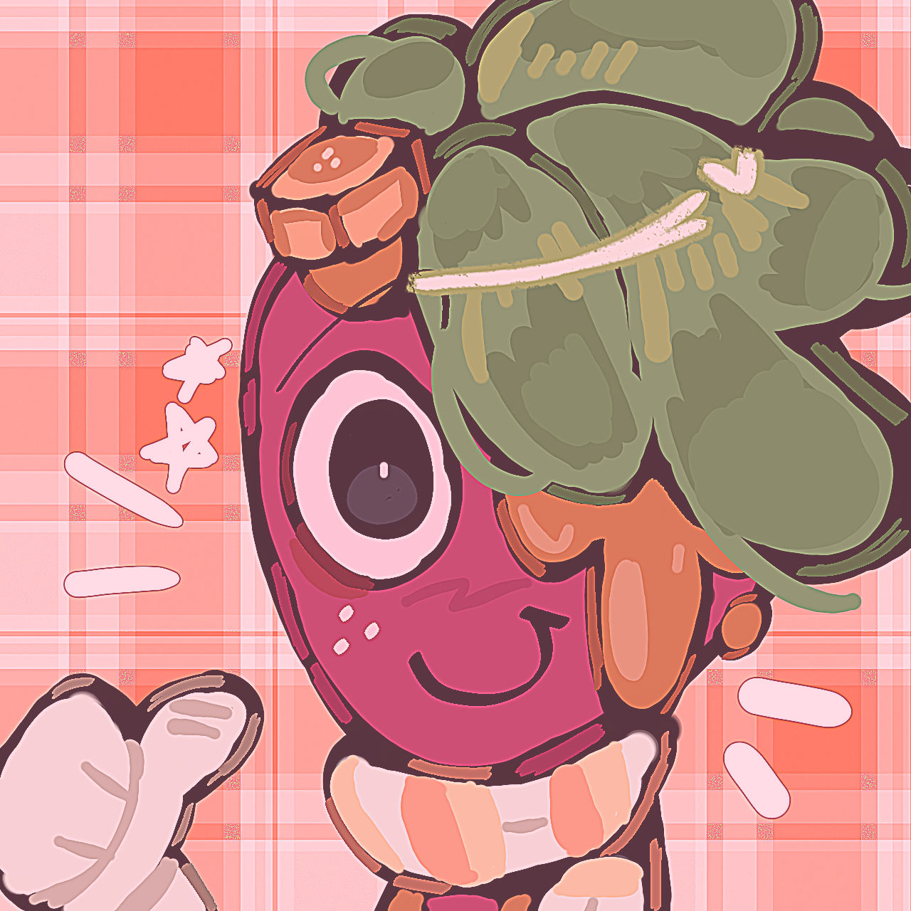

Dandy
Un toon muy feliz quiere ser bueno con todo el mundo pero él es malo.
Bienvenidos a Dandy's World
Un rincón dulce, colorido y divertido para conocer personajes de Dandy's World.
Personajes favoritos

Un toon muy feliz quiere ser bueno con todo el mundo pero él es malo.

Duerme mucho y solo quiere dormir, él es un toon muy tranquilo.

Ella es una toon muy valiente y hace su propia bebida .

Él es muy timido, tiene mucho miedo y es muy débil.

Él es un perro y es la mascota de dandy y distrae a los monstruos.

Ella es inteligente pero ella es muy mala con boxten y con poppy y hace preguntas.

Ella es una toon que le gusta los dinosaurios.

El es un gran cocinero con cosmo.